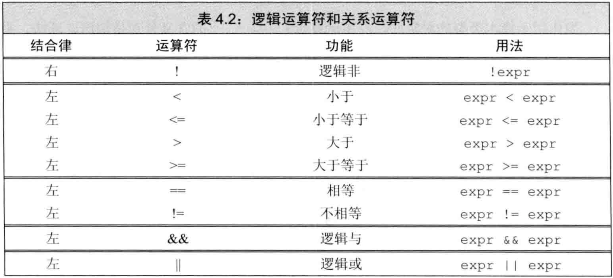
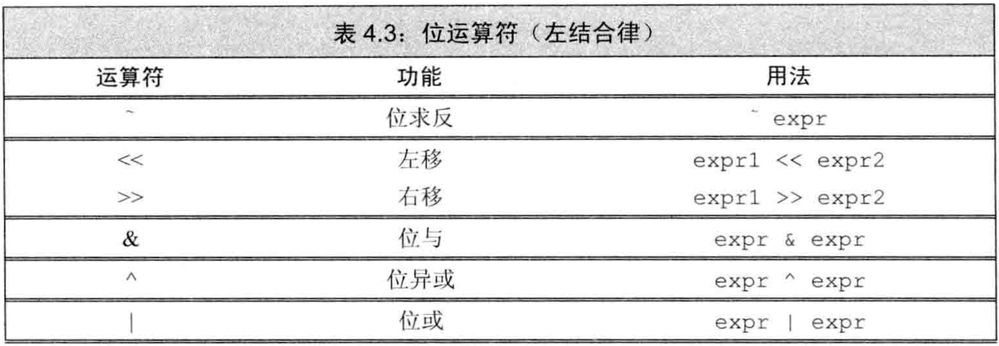
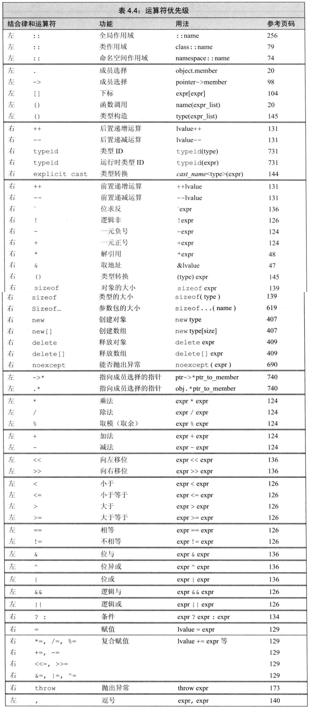

C++ primer 第4章 表达式
文章目录
- C++提供了一套
运算符并定义了它们作用于内置类型时的操作 - 运算对象是类类型时，允许
重载运算符 表达式由一个或多个运算对象组成，对表达式求值返回结果。把运算符和运算对象组合可得到复杂表达式。
基础
基本概念
一元运算符作用于一个对象，二元运算符作用于两个对象，还有三元运算符?:。函数调用也是特殊的运算符，其运算对象数量没有限制。- 一个符号是什么运算符由上下文指定，如
* - 理解表达式的含义，首先要知道运算符的
优先级、结合律，以及运算对象的求值顺序。 - 运算符中经常进行
类型转换，常见的是整型提升，如小整型（bool、char、short）被提升为int 重载运算符：为已存在的运算符赋予另外的操作。其中，运算对象和返回值的类型、操作方式都可重载，运算对象的个数、运算符的优先级和结合律不可重载。- C++的表达式都是右值或左值。它们的含义不仅仅是能不能位于赋值语句的左侧（反例如const等）。
当对象被用作右值时，用的是对象的值（内容）。当对象被用作左值时，用的是对象的身份（在内存中的位置）。- 除右值引用外，需要右值的地方都能用左值代替，反之不可。当左值被作为右值使用时，用的是它的值。
- 运算符的左右值要求：
- 赋值符
=需要非常量左值作为左侧对象，返回结果也是左值 - 取地址符
&作用于左值对象，返回指向该对象的指针，该指针是右值 - 内置解引用
*、内置下标[]、迭代器解引用*、string和vector的下标[]，它们返回的结果都是左值 - 内置和迭代器的递增
++递减--作用于左值对象，其前置版本返回左值
- 赋值符
- 若表达式求值结果是左值，则decltype的结果是引用类型。例如
int *p;求decltype(*p)的结果是int &
优先级与结合律
复合表达式是含有两个或多个运算符的表达式优先级和结合律决定了运算对象的组合方式。先看优先级，一致时看结合律- 括号
()无视优先级和结合律 - 算术运算符和IO运算符都满足
左结合律
求值顺序
求值顺序定义了多个运算对象哪个先被求值，如f1()*f2()中哪个函数先被调用- 对于未指定求值顺序的运算符，若表达式指向并修改了同一个对象，则行为未定义。如
cout<<i<<i++; - 明确规定求值顺序的4种运算符：逻辑与
&&、逻辑或||、条件?:、逗号, - 最佳实践：
- 拿不准优先级和结合律时，用括号。
- 若表达式某处改变了某对象的值，则其他地方不要使用它。例外：
*++iter
算术运算符

- 如上表是算术运算符，其中一元运算符优先级最高，其次乘除和求余，最后加减。
- 算术运算符都满足
左结合律 - 算术运算符的运算对象和结果都是
右值。 - 算术表达式求值前，小整型都会被提升。所有对象最终都转换成同一种类型
- 一元正号、加减都可用于指针。一元正号作用于指针或算术值时，返回（提升后的）
副本，一元负号对对象的值取负后，返回（提升后的）副本。 - 算术运算符的结果可能
溢出，其结果与机器相关，不可预知 - 参与取余
%的运算对象必须都是整型，不可用浮点做转换 - 除法运算
/中，C++的早期版本允许结果为负时向上或向下取整，C++11之后规定商一律向0取整，即直接切除小数部分。 - 取余运算
%中，若m和n是整数且n非0，则表达式(m/n)*n+m%n的结果为m。即，若m%n不为0，则其符号与m相同。C++的早期版本允许m%n的符号匹配n的符号且商向负无穷侧取整，但在C++11中被禁止了。除了-m导致溢出的特殊情况，(-m)/n和m/(-n)都等于-(m/n)，m%(-n)等于m%n，(-m)%n等于-(m%n) - 例子：负数的除法和取余
|
|
逻辑和关系运算符

- 关系运算符作用于算术或指针类型，逻辑运算符作用于任何能转换为bool的类型。它们的返回类型都是bool型
右值。 - 逻辑与
&&、逻辑或||都是短路求值，先求左侧，仅由左侧无法确定表达式结果时再求右侧。- 逻辑与
&&仅当左侧为真时才求右侧 - 逻辑或
||仅当左侧为假时才求右侧
- 逻辑与
- 使用中，可由逻辑与或的短路求值特性保证访问安全，例如
index!=s.size() && !isspace(s[index]) - 访问大对象时尽量用引用，避免发生拷贝
- 逻辑与或都满足左结合律，逻辑非满足右结合律。
- 关系运算符都满足左结合律，因此不能出现
i<j<k这种写法。 - 进行比较时除非比较对象都是严格的bool类型， 否则不要用
==true等字面值，因为true提升为整型时是1，不是任何非零值都能==true
赋值运算符
- 赋值运算符的左侧对象必须是可修改的
左值，其返回结果就是左侧对象，也是左值。 - 如果左右类型不匹配，将右侧转为左侧类型。
- 类类型的赋值运算符由类本身决定，如vector模板
重载了赋值运算符使其可接收花括号列表作为初值。 - 无论左侧对象的类型是什么，初始值列表都可为空。此时编译器创建一个值初始化的
临时量来初始化。 - 赋值运算满足
右结合律，即多重赋值语句a=b=c;解读为a=(b=c);，前面所有类型或者和最右侧类型相同，或者可由最右侧类型转换得到。 - C++允许赋值运算的结果作为条件，所以
=和==要分清。 - 复合赋值运算符：
- 算术运算符：
+=-=*=/=%= - 位运算符：
<<=>>=&=|=^=
- 算术运算符：
- 复合运算符更快：复合运算符
a+=b仅求值一次，普通运算符a=a+b求值两次，一次加法一次赋值。
递增和递减运算符
- 由于很多
迭代器不支持算术运算，故++和--的存在有其意义。 - 递增和递减符都作用于
左值对象。 ++i被称为前置版本，i++被称为后置版本。前置版本和后置版本的区别：- 前置版本将对象+1或-1后，将对象
本身作为左值返回 - 后置版本将对象+1或-1后，将对象
原始值的副本作为右值返回
- 前置版本将对象+1或-1后，将对象
- 应尽量使用前置版本，因为比后置版本少一次拷贝，避免了不必要的工作。
- 混用解引用和递增可实现简洁性：
cout<<*iter++;等价于cout<<*iter; ++iter; - 由于求值顺序经常未指定，所以不要在一条语句中出现
a和a++，如*beg=toupper(*beg++);未定义，可被解读为*beg=toupper(*beg)或*(beg+1)=toupper(*beg)
成员访问运算符
- 点运算符
.获取类对象的一个成员，箭头运算符->由解引用*和点运算符.组成，即ptr->mem等价于(*ptr).mem，括号不可省略，因为点优先级比解引用高。 - 箭头运算符作用于指针，得到对象的成员，结果是
左值。（因为解引用得到的一定是引用，引用是左值） - 点运算符取决于对象：对象是左值就返回左值，对象是右值就返回右值。
条件运算符
- 条件运算符
?:允许把简单的if-else逻辑嵌入单个表达式。用法如cond?expr1:expr2 - 条件运算符定义了求值顺序，类似于短路求值，根据
cond的结果来决定执行expr1还是expr2，只会执行一个。 - 如果
expr1和expr2都是左值或能转换为同一种左值类型，则运算结果是左值。否则是右值。 - 条件运算符满足
右结合律，即a?b:c?d:e应解读为a?b:(c?d:e)
位运算符
- 位运算符作用于
整型对象。另外，一种名为bitset的标准库类型也可表示任意大小的二进制位集合，位运算符也可作用于bitset对象。  - 位运算符遇到小整型（如bool、char、short等），会先将其自动提升再运算。
- 如果位运算符的运算对象是signed且值为负，则处理符号位的方式取决于机器。左移右移会改变符号位，是未定义行为。
- 移位运算符
<<和>>：首先令左侧运算对象按照右侧运算对象的要求移动指定位数，然后将移动后的（可能被提升了）左侧对象的拷贝作为结果。其中右侧对象一定不能为负，且值必须严格小于左侧位数。移出边界的位被舍弃。 - 移位运算符满足
左结合律 - 左移运算符向右侧插入0，右移运算符向左侧插入的数值取决于类型和机器：unsigned类型插入0，signed类型取决于机器和编码方式。
- 例子：移位和整型提升
|
|
- 对char等小整型按位取反
~也会先提升为int大小再取反。
sizeof运算符
- sizeof运算符返回一条
表达式或一个类型所占的字节数，满足右结合律，返回值是size_t类型的常量表达式。 - 两种形式：
sizeof(type)、sizeof expr - sizeof不会计算运算对象的值，所以可以：
- 可在sizeof里解引用无效指针，因为不会真的解引用。
- 可在sizeof里用域操作符
::获取类成员大小，而不需要对象和成员。
- sizeof的结果取决于运算对象的类型：
- char型表达式返回1
- 引用做sizeof返回被
引用对象所占空间大小 - 指针做sizeof返回
指针本身所占空间大小 - 解引用指针做sizeof返回
指向对象所占空间大小 - 数组做sizeof得到
整个数组所占空间大小，（attention：sizeof不会把数组当指针处理） - string或vector求sizeof只返回
固定部分的大小，不会计算对象实际占用空间
- 常用于计算数组长度的方法是：
sizeof(ia)/sizeof(*ia)，结果是constexpr，可用于声明新数组。
逗号运算符
- 接受两个对象，遵循
从左往右的求值顺序 - 计算过程：对左侧求值，将结果丢弃，再对右侧求值，返回右侧求值结果。如果右侧是左值，则返回也是左值。
- 实质上是将多个顺序执行的表达式写为一行的手段。
类型转换
隐式转换自动执行，不需程序员介入。算术类型的隐式转换被设计为尽量避免损失精度。- 隐式转换发生的情形：
- 整型提升
- 条件中非bool转bool
- 初始化时初始值转为变量类型，赋值时右侧对象转为左侧类型
- 算术运算或关系运算中有多种类型，最终会统一
- 函数调用时也会有类型转换
算术转换
算术转换：把运算对象（算术类型）转为最宽的类型，同时有整型和浮点时将整型转浮点。整型提升：把小整型转为大整型。- 小整型（bool、char、signed char、unsigned char、short、unsigned short等），只要值能放进int就转为int，放不进int就放进unsigned int
- 宽字符（wchar_t、char16_t、char32_t）提升为int、unsigned int、long、unsigned long、long long、unsigned long long中能装进去的最小者
signed和unsigned的转换：- 若unsigned类型不小于signed类型，直接将signed转为unsigned
- 若unsigned类型小于signed类型，且该unsigned类型的值都能装进该signed类型，则unsigned转为signed
- 若unsigned类型小于signed类型，且该unsigned类型的值不都能装进该signed类型，则signed转为unsigned
- 例子：算术转换
|
|
其他隐式类型转换
- 数组转指针：
- 大多数用到数组的表达式中，数组自动转为指向首元素的指针
- 在表达式中使用函数类型也会转为
函数指针 - 例外：
decltype、取地址&、sizeof、typeid运算符不会将数组转指针 - 例外：用引用初始化数组时也不会转指针
- 指针的转换：
0或nullptr可转为任意指针类型- 指向任意非常量的指针能转为
void * - 指向任意对象的指针能转为
const void *
- 转换为常量：允许将指向非常量的指针或引用转为指向常量的指针或引用。但反之不可，底层const不可删除。
- 类类型的转换：类类型可定义转换，但编译器只能执行一步转换。
显式转换
强制类型转换：手动指定要转换的变量和要转换为的类型，经常是很危险的。- 显式转换形式为
cast-name<type>(expression)，若type是引用类型，则返回左值。cast-name是static_cast、dynamic_cast、const_cast、reinterpret_cast中的一种。 static_cast：只要不包含底层const，都可使用。例如将大算术类型转为小算术类型、浮点转整型、编译器无法自动执行的类型转换- 可用static_cast找回存在于void *指针中的值，将其强制转换为原来的类型。
- 例子：static_cast找回void *指针中的值
|
|
const_cast：只能改变对象的底层const。（attention，用const_cast去掉底层const之后不可对其写入，这是未定义行为）- 如果对象是常量，用const_cast去掉常量后执行写操作是未定义行为。
- const_cast常用于有函数重载的上下文，其他情况下不可使用。
reinterpret_cast：为运算对象的位模式提供较低层次上的重新解释，即内存中的bits不变，改变解读方式。它依赖于机器，非常危险。- 建议避免使用强制类型转换，尤其是reinterpret_cast
- 早期C++中，显式类型转换的形式为
type(expr)和(type)expr。在某处使用旧式强制转换时，若换为const_cast和static_cast也合法，就当作const_cast和static_cast，否则当作reinterpret_cast。因为指代不明，故建议不使用。
运算符优先级表
下表列出了C++的全部运算符，双横线分为若干组，组越靠前优先级越高，同一组内优先级相同。 